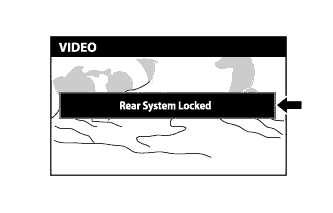

РАЗВЛЕКАТЕЛЬНО-ИНФОРМАЦИОННАЯ СИСТЕМА ДЛЯ ЗАДНИХ ПАССАЖИРОВ > Система дистанционного управления не работает |
| 1.ПРОВЕРЬТЕ СИСТЕМУ |
|  |
Убедитесь, что работа пульта дистанционного управления системы не запрещена дисплеем модуля системы навигации и индикации.
Проверьте, появляется ли сообщение "Rear System Locked" (выполнение функций задней системы запрещено) на экране телевизионного дисплея.
|
| ||||
| OK | |
| 2.ОЧИСТИТЕ ПРИЕМНИК И ПЕРЕДАТЧИК ИНФРАКРАСНОГО ИЗЛУЧЕНИЯ |
 |
Очистите приемник и передатчик инфракрасного излучения.
Очистите приемник и передатчик инфракрасного излучения на заднем дисплее.
Проверьте, проявляется ли неисправность снова.
|
| ||||
| OK | ||
| ||
| 3.ПРОВЕРЬТЕ БАТАРЕЮ ПУЛЬТА ДИСТАНЦИОННОГО УПРАВЛЕНИЯ |
Убедитесь, что батарея пульта дистанционного управления не разряжена.
|
| ||||
| OK | ||
| ||